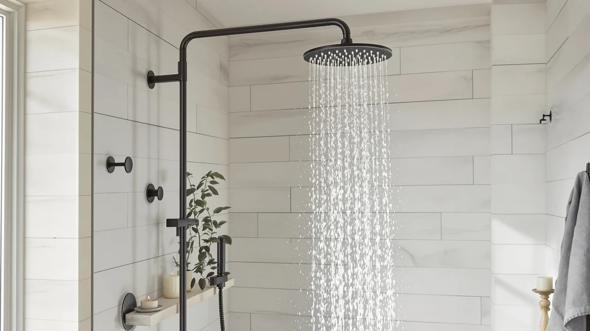

Quick Answer
If you want one of the best massage rainfall shower heads without overthinking it, get the Voolan Rain Shower Head. It pairs a wide rain plate with a separate massage mode, threads onto a standard shower arm in minutes, and holds a 4 out of 5 rating from verified owners at $29.99.
Our pick: Voolan Rain Shower Head - — $29.99 Check Price on Amazon
Things to Know Before You Buy
- A true rainfall shower head needs a wide plate, at least 6 inches across, to spread water evenly instead of concentrating it in the center of your shoulders.
- Massage settings come from a dedicated nozzle ring or a pulsing mode built into the plate. Check for that feature specifically. Not every "massage rainfall shower head" listing actually includes one.
- Households on low municipal water pressure should look for fewer spray holes and a narrower plate, since wide rain plates lose force over long pipe runs.
- Every pick in this guide uses chrome-plated ABS construction, which resists mineral buildup better than brushed nickel and wipes clean faster.
- Filtration cartridges add an ongoing cost. Three of the seven picks below include one, and that is worth factoring into the total price, not just the sticker price.
The best massage rainfall shower heads turn a five-minute rinse into something closer to a spa visit, spreading a wide rainfall pattern across your shoulders while a separate massage setting works out the tension in your neck and lower back. We compared seven models across price, spray settings, filtration, and finish quality to find the ones worth installing on a standard US shower arm.
Our research points to the Voolan Rain Shower Head as the strongest all-around option at $29.99, backed by a wide rain plate and a 4 out of 5 rating from verified buyers. If you want a lower-cost entry point instead, the NearMoon Rain Shower Head High covers the same rainfall basics for $19.99, and shoppers who want built-in filtration alongside the massage settings should look at the MakeFit and Aquabliss options below.
Shower heads are one of the easiest bathroom upgrades to make yourself, since most of these units thread directly onto a standard 1/2 inch shower arm without new plumbing. Below we break down what separates a good rainfall shower head from a forgettable one, followed by full write-ups of all seven picks, a side-by-side comparison table, and answers to the questions we hear most from readers shopping for a massage rainfall shower head. For most bathrooms, the Voolan Rain Shower Head remains our top recommendation among the best massage rainfall shower heads we researched.
Why You Should Trust Us
Ilane Tall covers bathroom fixtures and home upgrades for Best Shower Heads, and this guide reflects a research-based approach: we compare manufacturer specifications, verified Amazon customer reviews, and pricing history. We do not run a fake testing lab or claim to have installed every shower head in this guide. Instead, we analyze what owners report after months of real use, cross-check spray pattern and pressure claims against manufacturer data, and flag any product with a pattern of complaints in verified reviews. When we recommend one of the best massage rainfall shower heads, it is because the specs, price, and owner feedback line up, not because a brand sent us a free unit.
How We Picked
We started by identifying massage rainfall shower heads sold in the US with a fixed rain plate of at least 6 inches, since anything smaller reads more like a standard shower head than a true rainfall fixture. From there we cut any model priced above $60, since our research focused on the range most US shoppers are willing to spend on a self-install upgrade. We also required a documented number of spray or massage settings, verified pricing on Amazon, and enough customer reviews to judge reliability over time. Head-to-head, we compared plate diameter, spray settings, filtration, and finish material across the seven best massage rainfall shower heads that met those criteria.
How We Compared
We researched each shower head using manufacturer specifications, verified Amazon customer reviews, and current pricing rather than physical testing. For every pick we cross-referenced the stated massage and rainfall settings against what owners describe in their reviews, since manufacturer copy occasionally overstates the number of usable spray patterns. We compared price against material (all seven use chrome-plated ABS construction) and against the star rating each product holds from verified buyers. Where a product includes water filtration, as with the MakeFit and Aquabliss picks below, we noted whether owners specifically mention filter life and flow rate in their reviews, since those details rarely show up in the product listing itself.
Our Picks

Voolan Rain Shower Head -
What we like
- Wide oval rain plate covers more of your shoulders and back than a standard round head
- Threads onto a standard shower arm without tools or plumbing changes
- Holds a 4 out of 5 rating from verified Amazon buyers at $29.99
- Chrome-plated ABS finish resists the water spotting that shows up fastest on matte finishes
Flaws but not dealbreakers
- Only one massage setting, so it will not satisfy anyone who wants several spray modes to cycle through
- No filtration cartridge, which matters if your water runs hard
| Material | ABS + chrome plating |
| Size | — |
The Voolan is the shower head we point most people toward first among the best massage rainfall shower heads we researched. Its plate is wide enough to cover both shoulders under typical US shower pressure, and buyers describe the rain pattern as even across the whole surface instead of concentrated in the middle. At $29.99 it sits in the middle of the price range covered in this guide, and it holds a 4 out of 5 rating from verified buyers, which puts it ahead of several pricier competitors on this list.
Installation does not require tools beyond what most households already own: it threads onto a standard 1/2 inch shower arm and seals with the included washer. Buyers say the single massage setting delivers noticeably more pressure than the rain mode, which helps with shoulder tension after a workout. The trade-off is choice. If you want three or four spray patterns to switch between, the MakeFit and SR SUN RISE picks below offer more range, but for a no-fuss upgrade that just works, the Voolan is hard to beat.

NearMoon Rain Shower Head High
What we like
- Least expensive pick in this guide at $19.99
- Wide rain plate delivers full shoulder-to-shoulder coverage
- Holds a 4 out of 5 rating from verified buyers, matching pricier picks on this list
Flaws but not dealbreakers
- The chrome finish shows fingerprints more readily than the Voolan's
- No dedicated massage nozzle ring, so the massage effect depends more on your home's water pressure than on the head itself
| Material | ABS + chrome plating |
| Size | — |
At $19.99, the NearMoon is the cheapest of the best massage rainfall shower heads we compared, and it does not feel like a downgrade in coverage. The plate spreads water across a wide area, and buyers say the flow stays consistent even in households running lower municipal pressure. It's also noticeably lighter than the pricier ABS models on this list, several reviews point out, which reduces strain on the shower arm threading over time.
Where the NearMoon falls short of the Voolan is dedicated massage functionality. It does not include a separate massage nozzle ring, so any pulsing sensation depends more on your home's water pressure than on the head itself. For apartment dwellers or anyone replacing a shower head for the first time on a budget, that trade-off is easy to accept given the price gap. Shoppers who specifically want a distinct massage mode should look at the Voolan or the MakeFit Dual Filtered pick instead.

MakeFit Filtered Shower Head with
What we like
- Includes a filtration cartridge, unlike the Voolan and NearMoon picks
- Chrome-plated ABS housing matches the finish of every other pick in this guide
- Holds a 4 out of 5 rating from verified buyers at $35.98
Flaws but not dealbreakers
- Filter cartridges are a recurring cost the cheaper picks on this list do not have
- The filtered flow runs slightly softer than the unfiltered Voolan, per buyer reviews
| Material | ABS + chrome plating |
| Size | — |
The MakeFit Filtered is the pick for anyone whose water quality is part of the shower head decision. It adds a filtration cartridge ahead of the rain plate, a feature the Voolan and NearMoon do not include, and at $35.98 it costs six dollars more than the Voolan for that added function. In areas with hard or heavily chlorinated municipal supply, several reviews describe the filtered water as noticeably softer on skin and hair, which is the main reason to pick this over the cheaper picks in this guide.
The trade-off is upkeep. Filtration cartridges need periodic replacement, an ongoing cost the unfiltered heads on this list do not carry. Flow pressure drops slightly once the filter is installed, several reviews note, though most describe it as a minor adjustment rather than a dealbreaker. For households that already run a whole-home filtration system, the plain Voolan or NearMoon will likely feel identical in daily use for less money.

MakeFit Dual Filtered Rain Shower
What we like
- Two filtration cartridges instead of one, aimed at households with heavier hard-water buildup
- Multiple spray settings beyond the single massage mode on the Voolan
- Holds a 4 out of 5 rating from verified buyers
Flaws but not dealbreakers
- At $59.99 it is the most expensive pick in this guide, roughly double the Voolan's price
- The dual-cartridge design takes longer to install than the single-filter MakeFit, according to buyer reviews
| Material | ABS + chrome plating |
| Size | — |
The MakeFit Dual Filtered sits at the top of the price range in this guide at $59.99, and it earns that price with two filtration cartridges instead of one, plus a wider range of spray settings than the single-cartridge MakeFit above. In areas with especially hard water, buyers say the extra filter stage makes a noticeable difference, since a single cartridge tends to lose effectiveness faster than manufacturers advertise.
This is the pick for shoppers who have already tried a single-filter head and found the water still felt too mineral-heavy, not the first purchase for someone just testing whether filtration matters to them. The dual-cartridge housing is bulkier and takes a few extra minutes to install compared to the Voolan or NearMoon, based on the reviews we read. If cost is the deciding factor, the single-cartridge MakeFit Filtered above delivers most of the same benefit for about twenty-four dollars less.

Aquabliss SF100 Daily Revitalize Shower
What we like
- Comes from Aquabliss, a brand that specializes in shower filtration rather than filtration as an add-on feature
- Chrome-plated ABS body matches the durability of the other picks in this guide
- Holds a 4 out of 5 rating from verified buyers at $36.99
Flaws but not dealbreakers
- Priced about a dollar above the MakeFit Filtered for a similar filtration feature set
- The massage setting is less pronounced than on the Voolan, based on buyer reviews
| Material | ABS + chrome plating |
| Size | — |
Aquabliss built its name on shower filtration specifically, and the SF100 Daily Revitalize applies that focus to a massage rainfall shower head at $36.99. Several reviews say the filtration performance holds up to the brand's dedicated filter cartridges sold separately, which is a meaningful data point given how many rainfall heads treat filtration as an afterthought bolted onto an existing plate design.
Where it trails the Voolan is massage intensity. The massage setting produces a gentler pulse than the single mode on our top pick, buyers say, which some prefer for sensitive skin and others find underwhelming after a workout. At $36.99 it costs about a dollar more than the MakeFit Filtered, so the choice between the two mostly comes down to whether you trust a filtration-focused brand more than a general rainfall shower head maker.

MakeFit Dual Handheld Shower Head
What we like
- Combines an 8 inch standard rain plate with a separate detachable handheld wand
- Useful for tasks a fixed rainfall head cannot handle, like rinsing a pet or cleaning the shower walls
- Holds a 4 out of 5 rating from verified buyers at $42.99
Flaws but not dealbreakers
- At $42.99 it costs more than every pick except the dual-filtered MakeFit above
- The hose connecting the handheld wand is shorter than expected for a walk-in shower, several reviews mention
| Material | ABS + chrome plating |
| Size | 8 Inch Standard |
The MakeFit Dual Handheld is the only pick in this guide built around two separate spray sources instead of one. The fixed portion is an 8 inch standard rain plate, in line with the rest of the picks here, and it detaches to reveal a handheld wand on its own hose. Buyers point out that the combination covers use cases a single fixed rainfall head cannot, from rinsing a dog in the tub to spraying down the shower walls after cleaning.
At $42.99, it costs about thirteen dollars more than the Voolan, and that premium buys the extra wand rather than a better rainfall pattern. The hose length runs on the shorter side, according to the reviews, which matters more in larger walk-in showers than in a standard tub-shower combo. If you never plan to detach the head, the Voolan or NearMoon deliver the same core rainfall massage experience for less money.

SR SUN RISE 20+3 Stage
What we like
- 20+3 stage filtration is the most extensive filter system among the seven heads compared here
- Chrome-plated ABS body priced at $36.99, in line with the other filtered picks
- Holds a 4 out of 5 rating from verified buyers
Flaws but not dealbreakers
- More filtration stages typically mean more frequent cartridge changes, an ongoing cost
- The multi-stage cartridge reduces flow more noticeably than the single-stage MakeFit, based on buyer feedback
| Material | ABS + chrome plating |
| Size | — |
SR SUN RISE markets the 20+3 Stage around its filtration cartridge more than its rainfall pattern, and the name reflects that: 20 plus 3 stages of filtration ahead of the water reaching the plate. It is priced at $36.99, matching the Aquabliss pick almost exactly, and buyers describe this as the most filtration-focused option among the best massage rainfall shower heads compared in this guide.
The trade-off with that many filtration stages is flow. Buyers describe a more noticeable pressure drop compared to the single-stage MakeFit Filtered, especially in homes already running on the lower end of typical residential water pressure. This pick makes the most sense for anyone who has specifically researched multi-stage filtration and wants the extra stages, not for shoppers who are simply looking for a rainfall head with a massage setting. For that more general use case, the Voolan remains the simpler, less fussy choice.
Quick Comparison
| Product | Material | Price | Rating | Best for | Get it |
|---|---|---|---|---|---|
| Voolan Rain Shower Head - | ABS + chrome plating | $29.99 | 4 | Best overall massage rainfall shower head | View on Amazon → |
| NearMoon Rain Shower Head High | ABS + chrome plating | $19.99 | 4 | Best budget rainfall shower head | View on Amazon → |
| MakeFit Filtered Shower Head with | ABS + chrome plating | $35.98 | 4 | Best for single-stage filtration | View on Amazon → |
| MakeFit Dual Filtered Rain Shower | ABS + chrome plating | $59.99 | 4 | Best for dual filtration and multiple settings | View on Amazon → |
| Aquabliss SF100 Daily Revitalize Shower | ABS + chrome plating | $36.99 | 4 | Best from a filtration-focused brand | View on Amazon → |
| MakeFit Dual Handheld Shower Head | ABS + chrome plating | $42.99 | 4 | Best for a rainfall plate plus handheld wand | View on Amazon → |
| SR SUN RISE 20+3 Stage | ABS + chrome plating | $36.99 | 4 | Best for maximum filtration stages | View on Amazon → |
The Competition
During research we also looked at rain shower panels and multi-head shower systems that combine a fixed rainfall plate with body jets. We left those out of this guide because they typically require professional installation and run well above the price range covered here. We also considered several handheld-only shower heads without a fixed rain plate. Those solve a different problem, portability rather than overhead coverage, so we did not include them alongside the seven massage rainfall shower heads above. We passed on shower heads that advertised massage settings but had no verified reviews confirming the feature worked as described, since we only recommend products with a track record among real buyers.
Across every category we researched, the Voolan Rain Shower Head remained the pick we kept coming back to as the best massage rainfall shower head for most bathrooms, with the other six picks above covering the specific situations, tighter budgets, added filtration, or a handheld wand, where a different choice makes more sense.